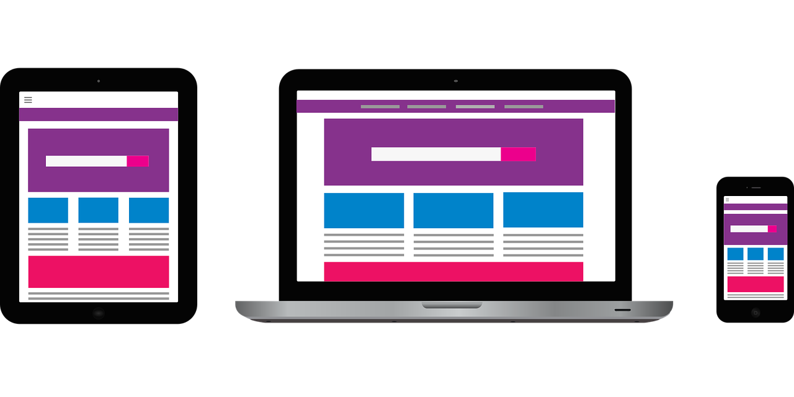

مكونات موقع الويب
الصفحات : صفحاتات ويب فرديه تحتوي على معلومات متعددة
النصوص: نصوص تحتوي على معلومات حول الموضوع المحدد
الصور:صور توضح المعلومات الموجودة في النصوص
الفيديوهات: فيديوهات توضح المعلومات الموجودة في النصوص
الروابط: روابط توصل إلى صفحات ويب أخرى أو إلى مواقع ويب أخرى
أنواع مواقع الويب
موقع ويب شخصي : موقع ويب يحتوي على معلومات حول شخص معين
موقع ويب تجاري: موقع ويب يحتوي على معلومات حول شركة أو منتج معين
موقع ويب تعليمي: موقع ويب يحتوي على معلومات تعليمية
موقع ويب إخباري: مواقع ويب يحتوي على أخبار و موضوع معين
ومن فوائد مواقع الويب : توفير المعلومات والتعليم والتجارة والتواصل
يستخدم موقع الويب الشخصي لأغراض متعددة منها
تعريف الشخص نفسة للأخرين
تقديم الخدمات
وتبادل الخدمات والمعرفة
والتواصل مع الأخرين يمكن إنشاء موقع الويب الشخصي بأستخدام ادوات وبرامج مختلفة مثل : منصات إنشاء المواقع
WordPress & Wix
أو ادوات تصميم الويب
Adobe dreamweaver & Microsoft Expression Web
او لغات البرمجة الويب
HTML & CSS & JavaScript
وأنا اسخدمت لأنشاء هذا الموقع
Visual Studio Code برنامج
Html & CSS & JavaScript بلغات
للعلم يمكنك إنشاء موقع ويب بدون برمجة في تطبيق جوجل كروم او برنامج جوجل سايت ....لكن هناك اختلاف كبير بين إنشاء مواقع الويب عبر البرمجة أو بدون البرمجة لأنة انشاء المواقع الويب بدون برمجة يكون سهولة ألأستخدام وقوالب جاهزة وتكامل مع خدمات جوجل ويكون إنشائه مجانا أما بالنسبة إنشاء المواقع الويب عبر البرمجة بأستخام لغة HTML & CSS
يكون هناك أكثر مرونة وتحكم كامل وأداء أعلى وتكامل مع تقنيات اخرى
تقديم الخدمات
وتبادل الخدمات والمعرفة
والتواصل مع الأخرين يمكن إنشاء موقع الويب الشخصي بأستخدام ادوات وبرامج مختلفة مثل : منصات إنشاء المواقع
WordPress & Wix
أو ادوات تصميم الويب
Adobe dreamweaver & Microsoft Expression Web
او لغات البرمجة الويب
HTML & CSS & JavaScript
وأنا اسخدمت لأنشاء هذا الموقع
Visual Studio Code برنامج
Html & CSS & JavaScript بلغات
للعلم يمكنك إنشاء موقع ويب بدون برمجة في تطبيق جوجل كروم او برنامج جوجل سايت ....لكن هناك اختلاف كبير بين إنشاء مواقع الويب عبر البرمجة أو بدون البرمجة لأنة انشاء المواقع الويب بدون برمجة يكون سهولة ألأستخدام وقوالب جاهزة وتكامل مع خدمات جوجل ويكون إنشائه مجانا أما بالنسبة إنشاء المواقع الويب عبر البرمجة بأستخام لغة HTML & CSS
يكون هناك أكثر مرونة وتحكم كامل وأداء أعلى وتكامل مع تقنيات اخرى
الهدف من الموقع


هدفنا من هذا الموقع هو مشاركة المعرفة و التواصل مع المهتمين و توسيع دائرة الخبرات والمهارات وأتطلع إلى التفاعل مع المهتمين والزوار من مختلف البلاد ..إذا كنت مهتم بمجال البرمجة وتصميم الويب أو تبحث عن خدمات أو مشاريع معينة فلا تترد في التواصل معنا
اللغة المستخدمة
تم تصميم الموقع بأستخدام لغة
HTML & CSS & JavaScript
لبعض أغراض التنسيق والبرمجة التفاعليه كما أن المحتوى متاح بلغتي العربية و الأنجليزية